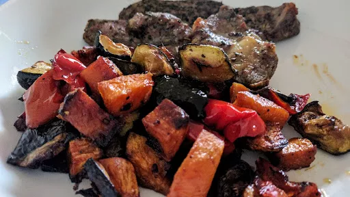

Herbed lamb cutlets with roasted vegetables

A healthy Mediterranean-style tray bake with sweet potato, peppers, courgettes and chunky onion.
Servings: 4
Total: 1 hr 0 mins
Ingredients
- 2 peppers, any colour, deseeded and cut into chunky pieces
- 1 large sweet potato, peeled and cut into chunky pieces
- 2 courgettes, sliced into chunks
- 1 red onion, cut into wedges
- 1 tbsp olive oil
- 8 cutlets lean lamb
- 1 tbsp thyme leaf, chopped
- 2 tbsp mint leaves, chopped
Instructions
- Heat oven to 200°C/Gas 7. Put the
peppers2
, sweet potato1 large
, courgettes2
and onion1
on a large baking tray and drizzle over the oil1 tbsp
. Season with lots of ground black pepper. Roast for 25 mins.
- Meanwhile, trim the
lamb8 cutlets
of as much fat as possible. Mix the herbs with a few twists of ground black pepper and pat all over the lamb8 cutlets
.
- Take the vegetables out of the oven, turn over and push to one side of the tray. Place the cutlets on the hot tray and return to the oven for 10 mins.
- Turn the cutlets and cook for a further 10 mins or until the vegetables and
lamb8 cutlets
are tender and lightly charred. Mix everything on the tray and serve.
-
kcal
429
-
fat
29 g
-
saturates
13 g
-
carbs
23 g
-
sugar
12 g
-
fibre
6 g
-
protein
19 g
-
salt
0.2 g
www.bbcgoodfood.com
Short Link
Long Link